GOV06 — Income Tax Return (ITR) Online Kaise File Karein?
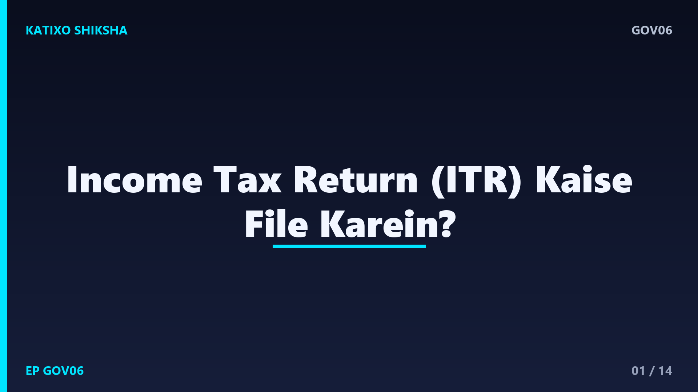
Slide 1दोस्तों, हर साल जुलाई के आस-पास एक डर सबको सताता है, ITR यानी Income Tax Return भरना है, और लगता है ये कोई बहुत मुश्किल काम है जो सिर्फ CA ही कर सकता है। बहुत लोग tax consultant को मोटी fees देते हैं, जबकि अगर आपकी income simple है, तो आप घर बैठे खुद ITR file कर सकते हैं, बिल्कुल free में। नमस्ते, आपका स्वागत है Katixo KhojLab में। आज हम बहुत आसान Hinglish में step-by-step समझेंगे कि official income tax portal पर ITR कैसे file करते हैं। चलिए शुरू करते हैं।
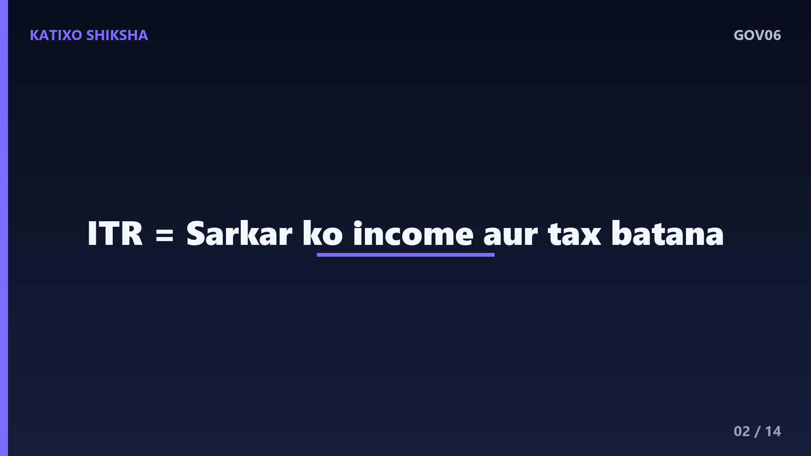
Slide 2सबसे पहले समझिए ITR है क्या। ITR यानी Income Tax Return, एक form है जिसमें आप सरकार को बताते हैं कि साल भर में आपने कितना कमाया, कितना tax बनता है, और कितना tax आप पहले ही जमा कर चुके हैं। अगर आपकी salary या income एक तय limit से ज़्यादा है, तो ITR भरना ज़रूरी है। दोस्तों, ITR भरने के कई फायदे हैं, जैसे अगर आपका extra tax कटा है तो refund मिल जाता है, और loan या visa के लिए ये एक important income proof भी बन जाता है।
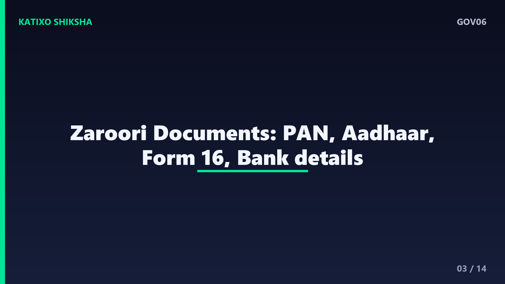
Slide 3अब file करने से पहले documents तैयार कर लीजिए। सबसे ज़रूरी है आपका PAN और Aadhaar, और ये दोनों आपस में linked होने चाहिए। फिर चाहिए आपका Form 16, जो आपका employer देता है और इसमें salary व कटे हुए tax की पूरी details होती हैं। साथ में bank account की details, interest का statement, और किसी investment का proof रखें जिससे आप deduction claim करना चाहते हैं। दोस्तों, एक और बहुत काम का document है Form 26AS और AIS, जो portal पर ही मिल जाता है और इसमें आपका पूरा tax record दिखता है।
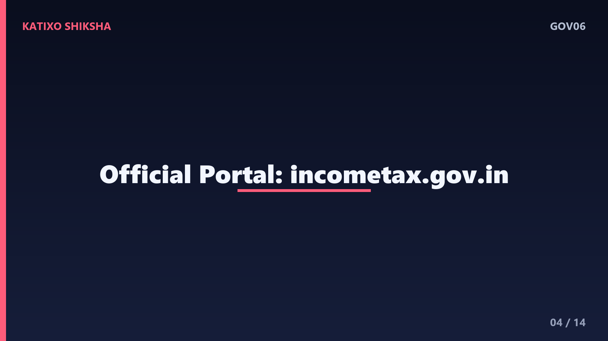
Slide 4अब जानिए file कहाँ करना है। दोस्तों, ITR भरने की एक ही official website है, incometax.gov.in, जो Income Tax Department का सरकारी e-filing portal है। यहीं पर आप register करते हैं, login करते हैं, और return file करते हैं, सब कुछ free में। बहुत ज़रूरी बात, search में आने वाली किसी भी third party site या किसी अनजान agent के link पर अपना PAN, password या OTP कभी ना डालें। हमेशा खुद browser में incometax.gov.in टाइप करके ही official portal खोलें।
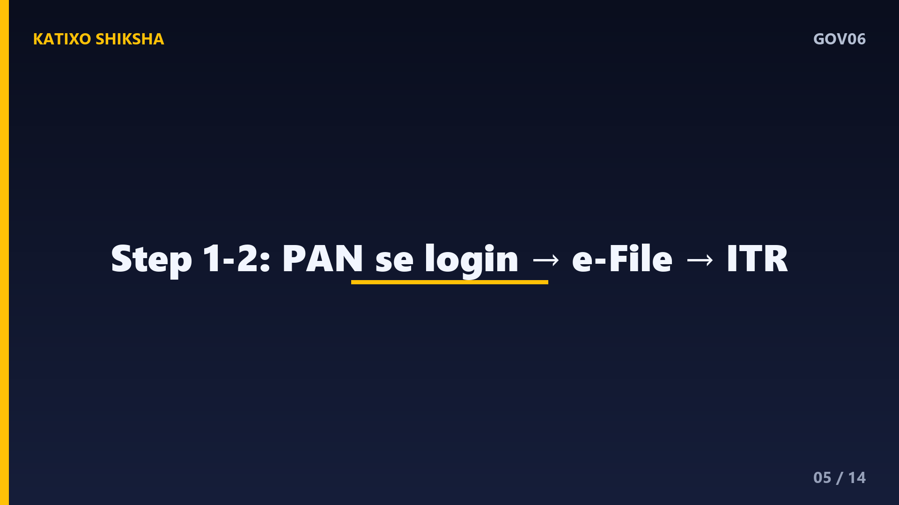
Slide 5अब step-by-step शुरू करते हैं। पहला step, incometax.gov.in पर जाकर अपने PAN से login करें, आपका PAN ही आपका user ID होता है। अगर पहली बार आ रहे हैं, तो पहले Register करना होगा। दूसरा step, login के बाद e-File menu में जाएँ, फिर Income Tax Returns चुनें, और File Income Tax Return पर click करें। दोस्तों, अगर PAN-Aadhaar linked नहीं है या mobile पर OTP नहीं आ रहा, तो पहले वो ठीक कर लें, वरना आगे की process रुक जाएगी।
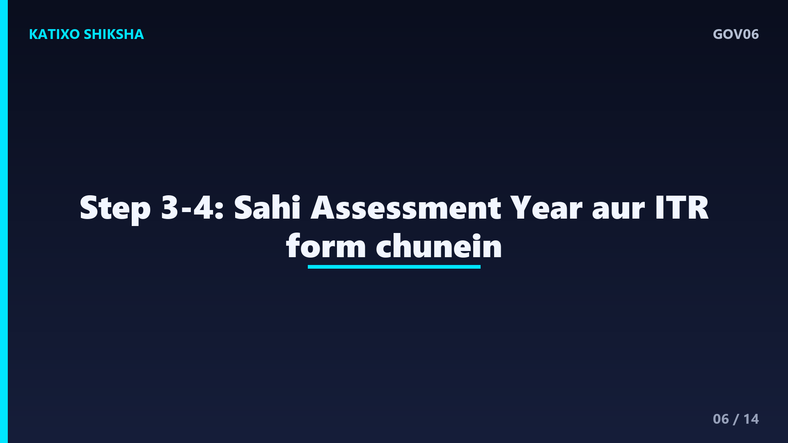
Slide 6तीसरा step, सही Assessment Year चुनें। ध्यान दीजिए, Assessment Year वो साल होता है जो financial year के बाद आता है, जिसकी income पर आप return भर रहे हैं। फिर filing का mode चुनें, ज़्यादातर लोगों के लिए online mode सबसे आसान रहता है। चौथा step, अपना सही ITR form चुनें। दोस्तों, सिर्फ salary और interest वाली simple income के लिए आम तौर पर ITR-1 होता है, पर अगर आपकी income के sources अलग हैं, तो form भी अलग हो सकता है, इसलिए सही form चुनना बहुत ज़रूरी है।
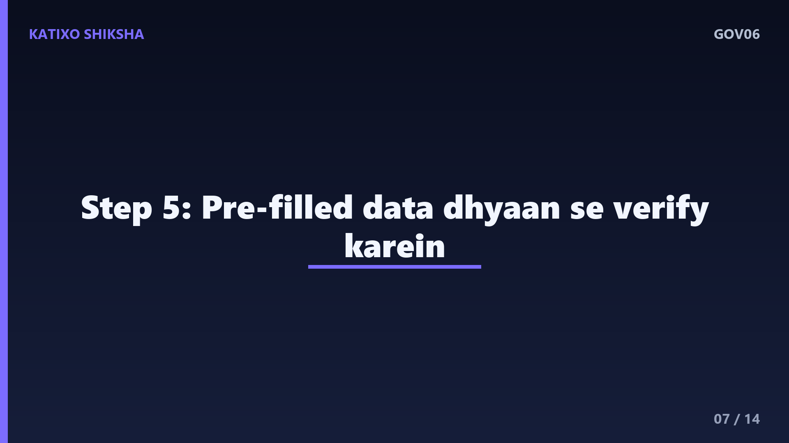
Slide 7पाँचवाँ step, सबसे सुविधाजनक हिस्सा, pre-filled data। दोस्तों, portal अब आपकी कई details अपने आप भर देता है, जैसे salary, कटा हुआ TDS, और bank interest, जो Form 16 और AIS से आता है। आपका काम है इन सब को ध्यान से verify करना। हर number को अपने Form 16 और bank statement से मिलाएँ। अगर कोई आंकड़ा गलत या missing है, तो उसे सही करें। ये step बहुत important है, क्योंकि गलत जानकारी पर बाद में notice आ सकता है।
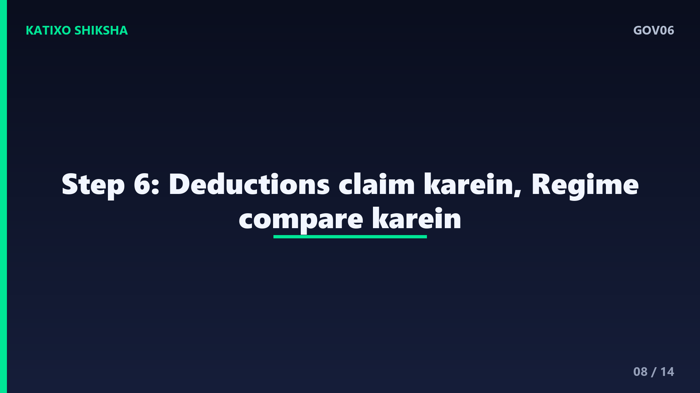
Slide 8छठा step, deductions और tax regime। आप जो investments या खर्चे करते हैं, उन पर deduction claim कर सकते हैं, जिससे आपका tax कम हो जाता है। साथ ही portal आपसे पूछता है कि आप old tax regime चुनना चाहते हैं या new, दोनों में tax slabs और deductions के नियम अलग होते हैं। दोस्तों, दोनों option को एक बार compare कर लें, portal अक्सर tax का अनुमान खुद दिखा देता है, जिससे आप समझ सकते हैं कि आपके लिए कौन सा regime ज़्यादा फायदेमंद है।
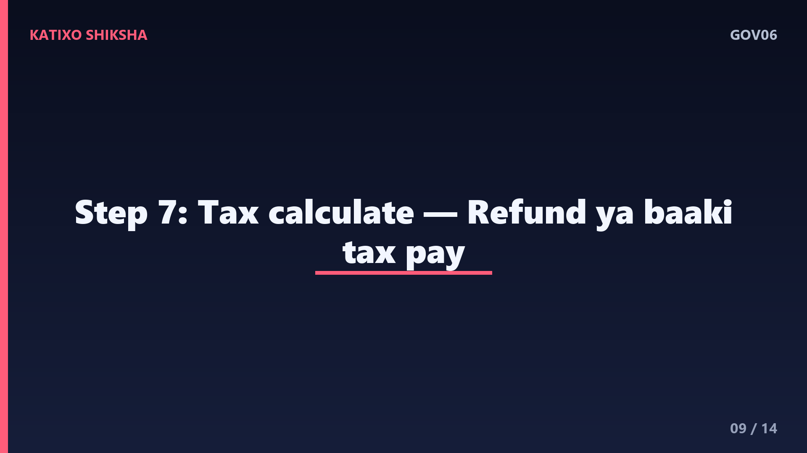
Slide 9सातवाँ step, tax का हिसाब और payment। सारी details भरने के बाद portal खुद calculate कर देता है कि आपको refund मिलेगा या कुछ tax बाकी है। अगर tax बाकी निकलता है, तो आप उसे online ही pay कर सकते हैं, और फिर return को आगे बढ़ा सकते हैं। दोस्तों, ITR file करने की कोई fee नहीं लगती, ये बिल्कुल free है, आप सिर्फ बकाया tax pay करते हैं, अगर कोई हो। किसी agent को return भरने की मोटी fees देने की कोई ज़रूरत नहीं, अगर income simple है।
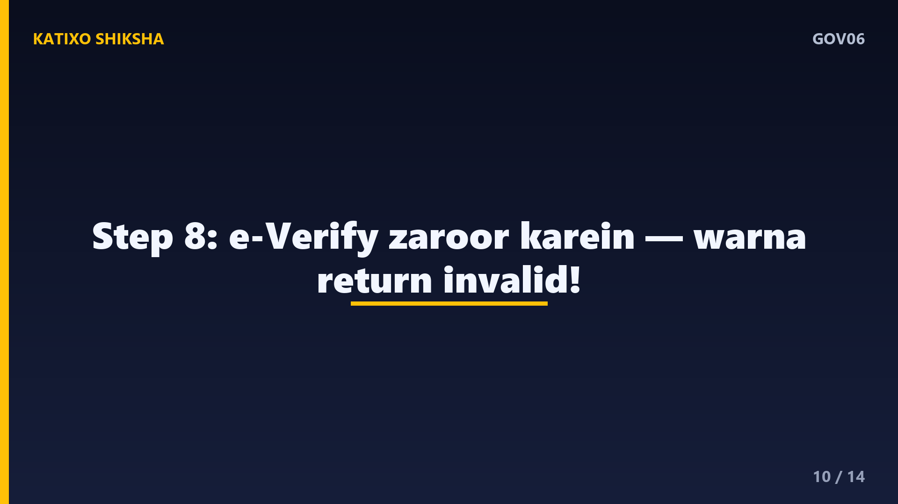
Slide 10आठवाँ step, सबसे ज़रूरी, e-verification। दोस्तों, बहुत लोग return submit करके भूल जाते हैं, पर जब तक आप अपना ITR verify नहीं करते, तब तक वो valid नहीं माना जाता। आप Aadhaar OTP, net banking, या demat account के ज़रिए कुछ ही मिनटों में e-verify कर सकते हैं। ध्यान रहे, verification के लिए filing के बाद एक तय समय-सीमा होती है। एक बार verify हो गया, तो आपका return process होना शुरू हो जाता है, और refund भी इसके बाद ही आता है।
Slide 11अब common गलतियाँ जिनसे बचना है। पहली गलती, last date का इंतज़ार करना, आखिरी दिन portal slow हो जाता है और penalty का खतरा भी रहता है। दूसरी, pre-filled data को बिना check किए submit कर देना। तीसरी, गलत ITR form या गलत Assessment Year चुनना। चौथी, return submit करके e-verification करना भूल जाना। और पाँचवीं, bank account गलत डालना, जिससे refund अटक जाता है। दोस्तों, ये छोटी गलतियाँ बड़ी देरी और परेशानी की वजह बनती हैं।
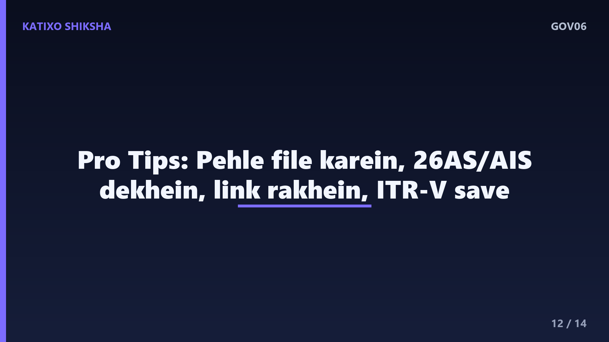
Slide 12कुछ काम की tips भी सुन लीजिए। Tip एक, due date आने से पहले ही file कर दें, ताकि आराम से check कर सकें। Tip दो, file करने से पहले अपना Form 26AS और AIS ज़रूर देख लें, ताकि TDS की details मिल जाएँ। Tip तीन, अपना PAN और Aadhaar पहले से link रखें और mobile व email portal में update रखें। और Tip चार, return file करने के बाद acknowledgement यानी ITR-V की copy download करके संभाल कर रखें, ये आपका proof है।
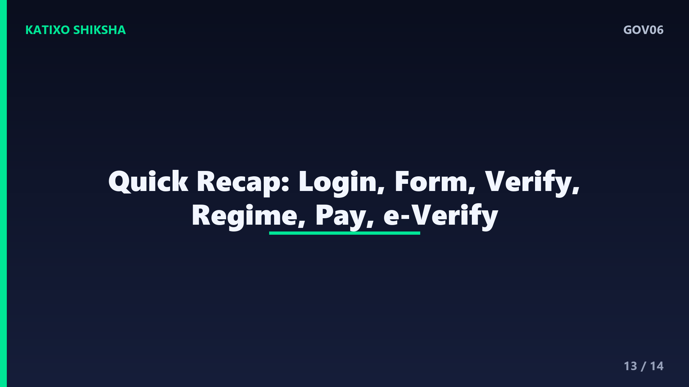
Slide 13अब एक quick recap कर लेते हैं। ITR सरकार को आपकी income और tax बताने का form है। सिर्फ official portal incometax.gov.in इस्तेमाल करें, और login आपके PAN से होता है। Documents में PAN, Aadhaar, Form 16, और bank details ज़रूरी हैं। सही Assessment Year और सही ITR form चुनें, pre-filled data verify करें, regime compare करें, और tax बाकी हो तो pay करें। और सबसे ज़रूरी, submit के बाद e-verify ज़रूर करें, वरना return अधूरा रह जाता है।
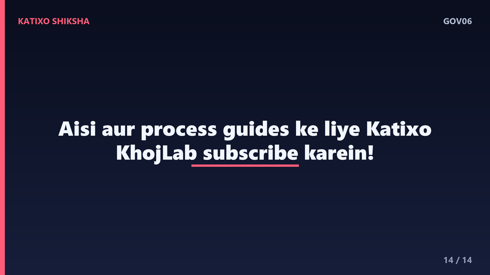
Slide 14तो दोस्तों, अब आप समझ गए कि ITR file करना उतना मुश्किल नहीं जितना लगता है। अगर आपकी income simple है, तो आप खुद, free में, official portal पर return भर सकते हैं। बस details सही भरें, e-verify करना ना भूलें, और अपना PAN या OTP किसी अनजान को कभी ना दें। अगर ये guide काम आई, तो ऐसी और सरकारी process guides के लिए Katixo KhojLab subscribe करें और bell icon ज़रूर दबाएँ। एक ज़रूरी disclaimer, process और fees बदल सकती हैं, इसलिए file करने से पहले official website ज़रूर check करें। मिलते हैं अगली guide में, धन्यवाद।